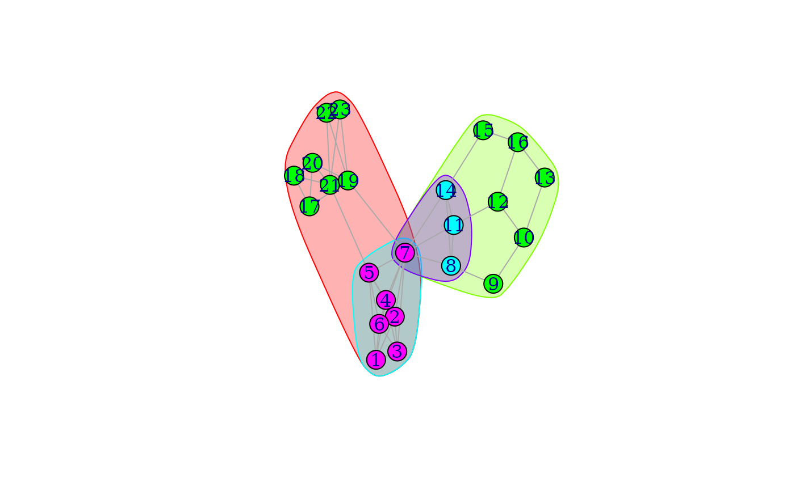

Calculates cohesive blocks for objects of class igraph.
Usage
cohesive_blocks(graph, labels = TRUE)
# S3 method for class 'cohesiveBlocks'
length(x)
blocks(blocks)
graphs_from_cohesive_blocks(blocks, graph)
# S3 method for class 'cohesiveBlocks'
cohesion(x, ...)
hierarchy(blocks)
parent(blocks)
# S3 method for class 'cohesiveBlocks'
print(x, ...)
# S3 method for class 'cohesiveBlocks'
summary(object, ...)
# S3 method for class 'cohesiveBlocks'
plot(
x,
y,
colbar = rainbow(max(cohesion(x)) + 1),
col = colbar[max_cohesion(x) + 1],
mark.groups = blocks(x)[-1],
...
)
plot_hierarchy(
blocks,
layout = layout_as_tree(hierarchy(blocks), root = 1),
...
)
export_pajek(blocks, graph, file, project.file = TRUE)
max_cohesion(blocks)Arguments
- graph
For
cohesive_blocks()a graph object of classigraph. It must be undirected and simple. (Seeis_simple().)For
graphs_from_cohesive_blocks()andexport_pajek()the same graph must be supplied whose cohesive block structure is given in theblocks()argument.- labels
Logical scalar, whether to add the vertex labels to the result object. These labels can be then used when reporting and plotting the cohesive blocks.
- blocks, x, object
A
cohesiveBlocksobject, created with thecohesive_blocks()function.- ...
Additional arguments.
plot_hierarchy()andplot()pass them toplot.igraph().print()andsummary()ignore them.- y
The graph whose cohesive blocks are supplied in the
xargument.- colbar
Color bar for the vertex colors. Its length should be at least \(m+1\), where \(m\) is the maximum cohesion in the graph. Alternatively, the vertex colors can also be directly specified via the
colargument.- col
A vector of vertex colors, in any of the usual formats. (Symbolic color names (e.g. ‘red’, ‘blue’, etc.) , RGB colors (e.g. ‘#FF9900FF’), integer numbers referring to the current palette. By default the given
colbaris used and vertices with the same maximal cohesion will have the same color.- mark.groups
A list of vertex sets to mark on the plot by circling them. By default all cohesive blocks are marked, except the one corresponding to the all vertices.
- layout
The layout of a plot, it is simply passed on to
plot.igraph(), see the possible formats there. By default the Reingold-Tilford layout generator is used.- file
Defines the file (or connection) the Pajek file is written to.
If the
project.fileargument isTRUE, then it can be a filename (with extension), a file object, or in general any king of connection object. The file/connection will be opened if it wasn't already.If the
project.fileargument isFALSE, then several files are created andfilemust be a character scalar containing the base name of the files, without extension. (But it can contain the path to the files.)See also details below.
- project.file
Logical scalar, whether to create a single Pajek project file containing all the data, or to create separated files for each item. See details below.
Value
cohesive_blocks() returns a cohesiveBlocks object.
blocks() returns a list of numeric vectors, containing vertex ids.
graphs_from_cohesive_blocks() returns a list of igraph graphs, corresponding to the
cohesive blocks.
cohesion() returns a numeric vector, the cohesion of each block.
hierarchy() returns an igraph graph, the representation of the cohesive
block hierarchy.
parent() returns a numeric vector giving the parent block of each
cohesive block, in the block hierarchy. The block at the root of the
hierarchy has no parent and 0 is returned for it.
plot_hierarchy(), plot() and export_pajek() return NULL,
invisibly.
max_cohesion() returns a numeric vector with one entry for each vertex,
giving the cohesion of its most cohesive block.
print() and summary() return the cohesiveBlocks object
itself, invisibly.
length returns a numeric scalar, the number of blocks.
Details
Cohesive blocking is a method of determining hierarchical subsets of graph vertices based on their structural cohesion (or vertex connectivity). For a given graph \(G\), a subset of its vertices \(S\subset V(G)\) is said to be maximally \(k\)-cohesive if there is no superset of \(S\) with vertex connectivity greater than or equal to \(k\). Cohesive blocking is a process through which, given a \(k\)-cohesive set of vertices, maximally \(l\)-cohesive subsets are recursively identified with \(l>k\). Thus a hierarchy of vertex subsets is found, with the entire graph \(G\) at its root.
The function cohesive_blocks() implements cohesive blocking. It
returns a cohesiveBlocks object. cohesiveBlocks should be
handled as an opaque class, i.e. its internal structure should not be
accessed directly, but through the functions listed here.
The function length can be used on cohesiveBlocks objects and
it gives the number of blocks.
The function blocks() returns the actual blocks stored in the
cohesiveBlocks object. They are returned in a list of numeric
vectors, each containing vertex ids.
The function graphs_from_cohesive_blocks() is similar, but returns the blocks as
(induced) subgraphs of the input graph. The various (graph, vertex and edge)
attributes are kept in the subgraph.
The function cohesion() returns a numeric vector, the cohesion of the
different blocks. The order of the blocks is the same as for the
blocks() and graphs_from_cohesive_blocks() functions.
The block hierarchy can be queried using the hierarchy() function. It
returns an igraph graph, its vertex ids are ordered according the order of
the blocks in the blocks() and graphs_from_cohesive_blocks(), cohesion(),
etc. functions.
parent() gives the parent vertex of each block, in the block hierarchy,
for the root vertex it gives 0.
plot_hierarchy() plots the hierarchy tree of the cohesive blocks on the
active graphics device, by calling igraph.plot.
The export_pajek() function can be used to export the graph and its
cohesive blocks in Pajek format. It can either export a single Pajek project
file with all the information, or a set of files, depending on its
project.file argument. If project.file is TRUE, then
the following information is written to the file (or connection) given in
the file argument: (1) the input graph, together with its attributes,
see write_graph() for details; (2) the hierarchy graph; and (3)
one binary partition for each cohesive block. If project.file is
FALSE, then the file argument must be a character scalar and
it is used as the base name for the generated files. If file is
‘basename’, then the following files are created: (1)
‘basename.net’ for the original graph; (2)
‘basename_hierarchy.net’ for the hierarchy graph; (3)
‘basename_block_x.net’ for each cohesive block, where ‘x’ is
the number of the block, starting with one.
max_cohesion() returns the maximal cohesion of each vertex, i.e. the
cohesion of the most cohesive block of the vertex.
The generic function summary() works on cohesiveBlocks objects
and it prints a one line summary to the terminal.
The generic function print() is also defined on cohesiveBlocks
objects and it is invoked automatically if the name of the
cohesiveBlocks object is typed in. It produces an output like this:
Cohesive block structure:
B-1 c 1, n 23
'- B-2 c 2, n 14 oooooooo.. .o......oo ooo
'- B-4 c 5, n 7 ooooooo... .......... ...
'- B-3 c 2, n 10 ......o.oo o.oooooo.. ...
'- B-5 c 3, n 4 ......o.oo o......... ... The left part shows the block structure, in this case for five blocks. The first block always corresponds to the whole graph, even if its cohesion is zero. Then cohesion of the block and the number of vertices in the block are shown. The last part is only printed if the display is wide enough and shows the vertices in the blocks, ordered by vertex ids. ‘o’ means that the vertex is included, a dot means that it is not, and the vertices are shown in groups of ten.
The generic function plot() plots the graph, showing one or more
cohesive blocks in it.
References
J. Moody and D. R. White. Structural cohesion and embeddedness: A hierarchical concept of social groups. American Sociological Review, 68(1):103–127, Feb 2003, doi:10.2307/3088904 .
Author
Gabor Csardi csardi.gabor@gmail.com for the current implementation, Peter McMahan (https://socialsciences.uchicago.edu/news/alumni-profile-peter-mcmahan-phd17-sociology) wrote the first version in R.
Examples
## The graph from the Moody-White paper
mw <- graph_from_literal(
1 - 2:3:4:5:6, 2 - 3:4:5:7, 3 - 4:6:7, 4 - 5:6:7,
5 - 6:7:21, 6 - 7, 7 - 8:11:14:19, 8 - 9:11:14, 9 - 10,
10 - 12:13, 11 - 12:14, 12 - 16, 13 - 16, 14 - 15, 15 - 16,
17 - 18:19:20, 18 - 20:21, 19 - 20:22:23, 20 - 21,
21 - 22:23, 22 - 23
)
mwBlocks <- cohesive_blocks(mw)
# Inspect block membership and cohesion
mwBlocks
#> Cohesive block structure:
#> B-1 c 1, n 23
#> '- B-2 c 2, n 14 oooooooo.. .o......oo ooo
#> '- B-4 c 5, n 7 ooooooo... .......... ...
#> '- B-3 c 2, n 10 ......o.oo o.oooooo.. ...
#> '- B-5 c 3, n 4 ......o.oo o......... ...
blocks(mwBlocks)
#> [[1]]
#> + 23/23 vertices, named, from 5320870:
#> [1] 1 2 3 4 5 6 7 21 8 11 14 19 9 10 12 13 16 15 17 18 20 22 23
#>
#> [[2]]
#> + 14/23 vertices, named, from 5320870:
#> [1] 1 2 3 4 5 6 7 21 19 17 18 20 22 23
#>
#> [[3]]
#> + 10/23 vertices, named, from 5320870:
#> [1] 7 8 11 14 9 10 12 13 16 15
#>
#> [[4]]
#> + 7/23 vertices, named, from 5320870:
#> [1] 1 2 3 4 5 6 7
#>
#> [[5]]
#> + 4/23 vertices, named, from 5320870:
#> [1] 7 8 11 14
#>
cohesion(mwBlocks)
#> [1] 1 2 2 5 3
# Save results in a Pajek file
file <- tempfile(fileext = ".paj")
export_pajek(mwBlocks, mw, file = file)
if (!interactive()) {
unlink(file)
}
# Plot the results
plot(mwBlocks, mw)

## The science camp network
camp <- graph_from_literal(
Harry:Steve:Don:Bert - Harry:Steve:Don:Bert,
Pam:Brazey:Carol:Pat - Pam:Brazey:Carol:Pat,
Holly - Carol:Pat:Pam:Jennie:Bill,
Bill - Pauline:Michael:Lee:Holly,
Pauline - Bill:Jennie:Ann,
Jennie - Holly:Michael:Lee:Ann:Pauline,
Michael - Bill:Jennie:Ann:Lee:John,
Ann - Michael:Jennie:Pauline,
Lee - Michael:Bill:Jennie,
Gery - Pat:Steve:Russ:John,
Russ - Steve:Bert:Gery:John,
John - Gery:Russ:Michael
)
campBlocks <- cohesive_blocks(camp)
campBlocks
#> Cohesive block structure:
#> B-1 c 2, n 18
#> '- B-2 c 3, n 4 oooo...... ........
#> '- B-3 c 3, n 5 ....ooooo. ........
#> '- B-4 c 3, n 6 .........o ooooo...
plot(campBlocks, camp,
vertex.label = V(camp)$name, margin = -0.2,
vertex.shape = "rectangle", vertex.size = 24, vertex.size2 = 8,
mark.border = 1, colbar = c(NA, NA, "cyan", "orange")
)